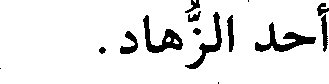
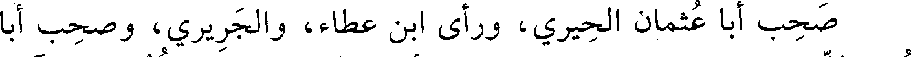

File: 001082.gt.txt (if the image is defective, simply delete all Arabic text and the line will be excluded)

علي، وأبو نعيم(1)، وغيرهما.
File: 001083.gt.txt (if the image is defective, simply delete all Arabic text and the line will be excluded)

توفي في سلخ ذي القعدة.
File: 001084.gt.txt (if the image is defective, simply delete all Arabic text and the line will be excluded)

76 - عبدالعزيز بن إسحاق بن جعفر، أبو القاسم الزيدي
File: 001085.gt.txt (if the image is defective, simply delete all Arabic text and the line will be excluded)

البغدادي.
File: 001086.gt.txt (if the image is defective, simply delete all Arabic text and the line will be excluded)

ذكره ابن أبي الفوارس، فقال : كان له مذهب خبيث، ولم يكن في
File: 001087.gt.txt (if the image is defective, simply delete all Arabic text and the line will be excluded)

الرواية بذاك. سمعت منه أجزاء فيها أحاديث ردية.
File: 001088.gt.txt (if the image is defective, simply delete all Arabic text and the line will be excluded)

قلت : يعرف بابن البقال، حدث عن الباغندي، وعلي بن العباس
File: 001089.gt.txt (if the image is defective, simply delete all Arabic text and the line will be excluded)

المقانعي.
File: 001090.gt.txt (if the image is defective, simply delete all Arabic text and the line will be excluded)

قال التنوخي: كان من متكلمي الشيعة، له مصنفات على مذهب
File: 001091.gt.txt (if the image is defective, simply delete all Arabic text and the line will be excluded)

الزيدية، يجمع حديثا كثيرا، وله أخ شاعر مشهور(2) .
File: 001092.gt.txt (if the image is defective, simply delete all Arabic text and the line will be excluded)

77 - عبدالعزيز بن جعفر بن أحمد بن يزداد، أبو بكر الفقيه
File: 001093.gt.txt (if the image is defective, simply delete all Arabic text and the line will be excluded)

الحنبلي، غلام الخلال، شيخ الحنابلة وعالمهم المشهور.
File: 001094.gt.txt (if the image is defective, simply delete all Arabic text and the line will be excluded)

تفقه بأستاذه أبي بكر الخلال، وسمع من عبدالله بن أحمد بن حنبل
File: 001095.gt.txt (if the image is defective, simply delete all Arabic text and the line will be excluded)

عيسى النحوي، وأبو القاسم الداركي، وابن الدقاق الفقيه، وشكوا إليه ما
File: 001096.gt.txt (if the image is defective, simply delete all Arabic text and the line will be excluded)

دهم الإسلام من هذه الحادثة العظمى، فوعدهم بالغزو، ونادى بالنفير في
File: 001097.gt.txt (if the image is defective, simply delete all Arabic text and the line will be excluded)

الناس، فخرج من العوام خلق عدد الرمل، ثم جهز جيشا، وغزوا فهزموا
File: 001098.gt.txt (if the image is defective, simply delete all Arabic text and the line will be excluded)

الروم، وقتلوا منهم مقتلة كبيرة، وأسروا أميرهم وجماعة من بطارقته،
File: 001099.gt.txt (if the image is defective, simply delete all Arabic text and the line will be excluded)

وأنفذت رؤوس القتلى إلى بغداد، وفرح المؤمنون بنصر الله.
File: 001100.gt.txt (if the image is defective, simply delete all Arabic text and the line will be excluded)

وصادر بختيار بن بويه المطيع، فقال: أنا ليس لي غير الخطبة، فإن
File: 001101.gt.txt (if the image is defective, simply delete all Arabic text and the line will be excluded)

أحببتم اعتزلت، فشددوا عليه حتى باع قماشه، وحمل أربع مئة ألف درهم،
File: 001102.gt.txt (if the image is defective, simply delete all Arabic text and the line will be excluded)

فأنفقها ابن بويه في أغراضه، وأهمل الغزو، وشاع في الألسنة أن الخليفة
File: 001103.gt.txt (if the image is defective, simply delete all Arabic text and the line will be excluded)

صودر، كما شاع قبله أن القاهر بالله كدي يوم جمعة، فانظر إلى تقلبات
File: 001104.gt.txt (if the image is defective, simply delete all Arabic text and the line will be excluded)

الدهر!
File: 001105.gt.txt (if the image is defective, simply delete all Arabic text and the line will be excluded)

وفي شهر رمضان قتل رجل من أعوان الوالي في بغداد، فبعث الرئيس
File: 001106.gt.txt (if the image is defective, simply delete all Arabic text and the line will be excluded)

أبو الفضل الشيرازي - وكان قد أقامه عز الدولة على الوزارة - من طرح النار
File: 001107.gt.txt (if the image is defective, simply delete all Arabic text and the line will be excluded)

من النحاسين إلى السماكين، فاحترق حريق عظيم لم يشهد مثله، واحترقت
File: 001108.gt.txt (if the image is defective, simply delete all Arabic text and the line will be excluded)

أموال عظيمة وجماعة كثيرة من النساء، والرجال، والصبيان، والأطفال في
File: 001109.gt.txt (if the image is defective, simply delete all Arabic text and the line will be excluded)

الدور وفي الحمامات، فأحصى ما أحرق من بغداد فكان سبعة عشر وثلاث
File: 001110.gt.txt (if the image is defective, simply delete all Arabic text and the line will be excluded)

مئة دكان، وثلاث مئة وعشرين دارا، أجرة ذلك في الشهر ثلاثة وأربعون
File: 001111.gt.txt (if the image is defective, simply delete all Arabic text and the line will be excluded)

ألفا، ودخل في الجملة ثلاثة وثلاثون مسجدا. فقال رجل لأبي الفضل
File: 001112.gt.txt (if the image is defective, simply delete all Arabic text and the line will be excluded)

الشيرازي: أيها الوزير أريتنا قدرتك، ونحن نأمل من الله أن يرينا قدرته فيك،
File: 001113.gt.txt (if the image is defective, simply delete all Arabic text and the line will be excluded)

فلم يجبه، وكثر الدعاء عليه. ثم أن عز الدولة قبض عليه وسلمه إلى الشريف
File: 001114.gt.txt (if the image is defective, simply delete all Arabic text and the line will be excluded)

أبي الحسن محمد بن عمر العلوي، فأنفذه إلى الكوفة، وسقي ذراريح(1)،
File: 001115.gt.txt (if the image is defective, simply delete all Arabic text and the line will be excluded)

فتقرحت مثانته، فهلك في ذي الحجة من هذه السنة، لا رحمه الله.
File: 001116.gt.txt (if the image is defective, simply delete all Arabic text and the line will be excluded)

وفي يوم الجمعة ثامن رمضان دخل المعز أبو تميم معد بن إسماعيل
File: 001117.gt.txt (if the image is defective, simply delete all Arabic text and the line will be excluded)

العبيدي مصر ومعه توابيت آبائه، وكان قد مهد له ملك الديار المصرية
File: 001118.gt.txt (if the image is defective, simply delete all Arabic text and the line will be excluded)

مولاه جوهر، وبنى له القاهرة، وأقام بها دارا للإمرة، وتعرف بالقصرين.
File: 001119.gt.txt (if the image is defective, simply delete all Arabic text and the line will be excluded)

وفيها أقبل الدمستق في جيوشه إلى ناحية ميافارقين، فالتقاه ولد ناصر
File: 001120.gt.txt (if the image is defective, simply delete all Arabic text and the line will be excluded)

الدولة بن حمدان وهزم الروم، ولله الحمد، وأسر الدمستق الخبيث، وبقي
File: 001121.gt.txt (if the image is defective, simply delete all Arabic text and the line will be excluded)

عز الدولة بختيار، ثم خرج إلى فارس.
File: 001122.gt.txt (if the image is defective, simply delete all Arabic text and the line will be excluded)

وفيها تزوج الطائع شاهناز بنت عز الدولة على صداق مئة ألف دينار.
File: 001123.gt.txt (if the image is defective, simply delete all Arabic text and the line will be excluded)

وفي رجب عدمت الأقوات حتى أبيع كر الدقيق بمئة وسبعين دينارا،
File: 001124.gt.txt (if the image is defective, simply delete all Arabic text and the line will be excluded)

والتمر ثلاثة أرطال بدرهم.
File: 001125.gt.txt (if the image is defective, simply delete all Arabic text and the line will be excluded)

ولم يخرج وفد من بغداد بل خرجت طائفة من الخراسانيين مخاطرة،
File: 001126.gt.txt (if the image is defective, simply delete all Arabic text and the line will be excluded)

فلحقتهم شدة.
File: 001127.gt.txt (if the image is defective, simply delete all Arabic text and the line will be excluded)

وفي سلخ ذي القعدة عزل قاضي القضاة أبو الحسن محمد ابن أم
File: 001128.gt.txt (if the image is defective, simply delete all Arabic text and the line will be excluded)

شيبان، وولي أبو محمد بن معروف.
File: 001129.gt.txt (if the image is defective, simply delete all Arabic text and the line will be excluded)

وفي هذه السنين وبعدها كان الرفض يغلي ويفور بمصر والشام،
File: 001130.gt.txt (if the image is defective, simply delete all Arabic text and the line will be excluded)

والمغرب والمشرق، لا سيما بالعبيدية الباطنية، قاتلهم الله.
File: 001131.gt.txt (if the image is defective, simply delete all Arabic text and the line will be excluded)

قال مشرف بن مرجى المقدسي: أخبرنا الشيخ أبو بكر محمد بن
File: 001132.gt.txt (if the image is defective, simply delete all Arabic text and the line will be excluded)

الحسن قال: حدثني الشيخ الصالح أبو القاسم الواسطي، قال: كنت
File: 001133.gt.txt (if the image is defective, simply delete all Arabic text and the line will be excluded)

مجاورا ببيت المقدس، فأمروا في أول رمضان بقطع التراويح، فصحت أنا
File: 001134.gt.txt (if the image is defective, simply delete all Arabic text and the line will be excluded)

وعبدالله الخادم: واإسلاماه وامحمداه، فأخذني الأعوان وحبست، ثم جاء
File: 001135.gt.txt (if the image is defective, simply delete all Arabic text and the line will be excluded)

الكتاب من مصر بقطع لساني فقطع، فبعد أسبوع رأيت النبي صعلم في النوم
File: 001136.gt.txt (if the image is defective, simply delete all Arabic text and the line will be excluded)

تفل في فمي، فانتبهت ببرد ريق رسول الله صعلم وقد زال عني الألم،
File: 001137.gt.txt (if the image is defective, simply delete all Arabic text and the line will be excluded)

فتوضأت وصليت وعمدت إلى المأذنة فأذنت «الصلاة خير من النوم»،
File: 001138.gt.txt (if the image is defective, simply delete all Arabic text and the line will be excluded)

فأخذوني وحبست وقيدت، وكتبوا في إلى مصر، فورد الكتاب بقطع
File: 001139.gt.txt (if the image is defective, simply delete all Arabic text and the line will be excluded)

لساني، وبضربي خمس مئة سوط، وبصلبي، ففعل بي ذلك، فرأيت لساني
File: 001140.gt.txt (if the image is defective, simply delete all Arabic text and the line will be excluded)

على البلاط مثل الرية، وكان في البرد والجليد، وصلبت واشتد علي
File: 001141.gt.txt (if the image is defective, simply delete all Arabic text and the line will be excluded)

الجليد، فبعد ثلاثة أيام عهدي بالحدائين يقولون: نعرف الوالي أن هذا قد
File: 001142.gt.txt (if the image is defective, simply delete all Arabic text and the line will be excluded)

مات، فأتوه، وكان الوالي جيش بن الصمصامة فقال: أنزلوه، فألقوني على
File: 001143.gt.txt (if the image is defective, simply delete all Arabic text and the line will be excluded)

باب داود، فقوم يترحمون علي وآخرون يلعنوني، فلما كان بعد العشاء
File: 001144.gt.txt (if the image is defective, simply delete all Arabic text and the line will be excluded)

جاءني أربعة فحملوني على نعش ومضوا بي ليغسلوني في دار فوجدوني
File: 001145.gt.txt (if the image is defective, simply delete all Arabic text and the line will be excluded)

حيا، فكانوا يصلحون لي خزيرة بلوز وسكر أسبوعا. ثم رأيت النبي صعلم في
File: 001146.gt.txt (if the image is defective, simply delete all Arabic text and the line will be excluded)

المنام ومعه أصحابه العشرة فقال: يا أبا بكر، ترى ما قد جرى على
File: 001147.gt.txt (if the image is defective, simply delete all Arabic text and the line will be excluded)

صاحبك؟ قال: يا رسول الله فما أصنع به؟ قال: اتفل في فيه، فتفل في في،
File: 001148.gt.txt (if the image is defective, simply delete all Arabic text and the line will be excluded)

(الوفيات)
File: 001149.gt.txt (if the image is defective, simply delete all Arabic text and the line will be excluded)

سنة إحدى وستين وثلاث مئة ومن توفي فيها
File: 001150.gt.txt (if the image is defective, simply delete all Arabic text and the line will be excluded)

1 - أحمد ابن المحدث محمد بن العباس بن نجيح البغدادي، أبو
File: 001151.gt.txt (if the image is defective, simply delete all Arabic text and the line will be excluded)

الحسن، رئيس المعتزلة ببغداد.
File: 001152.gt.txt (if the image is defective, simply delete all Arabic text and the line will be excluded)

ورخه طلحة في ربيع الآخر، وقال: كان رئيس المعتزلة.
File: 001153.gt.txt (if the image is defective, simply delete all Arabic text and the line will be excluded)

2 - أحمد بن محمد بن سعيد بن سهل بن شبرة(1) ، بالمعجمة
File: 001154.gt.txt (if the image is defective, simply delete all Arabic text and the line will be excluded)

والتثقيل، أبو حامد النيسابوري الصيرفي الزاهد الثبت، نزيل سمرقند.
File: 001155.gt.txt (if the image is defective, simply delete all Arabic text and the line will be excluded)

روى عن عمر البجيري، وأبن خزيمة، والسراج.
File: 001156.gt.txt (if the image is defective, simply delete all Arabic text and the line will be excluded)

قال الإدريسي: ثقة، كتبنا عنه، ومات بسمرقند في شعبان(2) .
File: 001157.gt.txt (if the image is defective, simply delete all Arabic text and the line will be excluded)

3 - أحمد بن مسور الأمير.
File: 001158.gt.txt (if the image is defective, simply delete all Arabic text and the line will be excluded)

ولي دمشق للحسن بن أحمد القرمطي المعروف بالسيد عند تغلبة ثانيا
File: 001159.gt.txt (if the image is defective, simply delete all Arabic text and the line will be excluded)

على الشام، وذلك في رمضان. ومات بعد عشرة أشهر، أعنى أحمد(3) .
File: 001160.gt.txt (if the image is defective, simply delete all Arabic text and the line will be excluded)

4 - إبراهيم بن أحمد بن إبراهيم البغدادي البزوري، أبو إسحاق
File: 001161.gt.txt (if the image is defective, simply delete all Arabic text and the line will be excluded)

المقرىء.
File: 001162.gt.txt (if the image is defective, simply delete all Arabic text and the line will be excluded)

قرأ على إسحاق الخزاعي، والحسن بن الحسين الصواف، وأحمد بن
File: 001163.gt.txt (if the image is defective, simply delete all Arabic text and the line will be excluded)

فرح، وجماعة.
File: 001164.gt.txt (if the image is defective, simply delete all Arabic text and the line will be excluded)

وكان من أئمة هذا الشأن، وحدث عن البغوي وغيره؛ قرأ عليه محمد
File: 001165.gt.txt (if the image is defective, simply delete all Arabic text and the line will be excluded)

بن عمر بن بكير، وعلي بن محمد الحذاء، وعبدالباقي بن الحسن.
File: 001166.gt.txt (if the image is defective, simply delete all Arabic text and the line will be excluded)

مات في ذي الحجة(4) .
File: 001167.gt.txt (if the image is defective, simply delete all Arabic text and the line will be excluded)

193
File: 001168.gt.txt (if the image is defective, simply delete all Arabic text and the line will be excluded)

100 - أحمد بن محمد بن أيوب، أبو بكر الفارسي الواعظ
File: 001169.gt.txt (if the image is defective, simply delete all Arabic text and the line will be excluded)

المفسر، نزيل نيسابور.
File: 001170.gt.txt (if the image is defective, simply delete all Arabic text and the line will be excluded)

كان له أتباع ومريدون، وعظ ببخارى فكثر جمعه، وخاف الحنفية من
File: 001171.gt.txt (if the image is defective, simply delete all Arabic text and the line will be excluded)

تغلبه عليهم. كان يحضر مجلسه نحو عشرة آلاف. كتب عنه أبو عبد الله
File: 001172.gt.txt (if the image is defective, simply delete all Arabic text and the line will be excluded)

الحاكم.
File: 001173.gt.txt (if the image is defective, simply delete all Arabic text and the line will be excluded)

101 - أحمد بن محمد بن فرحون، أبو القاسم الأندلسي.
File: 001174.gt.txt (if the image is defective, simply delete all Arabic text and the line will be excluded)

سمع عبيدالله بن يحيى، وأيوب بن سليمان، وطاهر بن عبدالعزيز.
File: 001175.gt.txt (if the image is defective, simply delete all Arabic text and the line will be excluded)

وحدث. وكان ضابطا، وفيه لين(1).
File: 001176.gt.txt (if the image is defective, simply delete all Arabic text and the line will be excluded)

102 - أحمد بن محمد بن المؤمل بن الحسن بن عيسى
File: 001177.gt.txt (if the image is defective, simply delete all Arabic text and the line will be excluded)

الماسرجسي النيسابوري، أبو الحسن.
File: 001178.gt.txt (if the image is defective, simply delete all Arabic text and the line will be excluded)

من بيت علم ورواية، وكان رجلا صالحا. روى عن جده، وأبي
File: 001179.gt.txt (if the image is defective, simply delete all Arabic text and the line will be excluded)

عمرو أحمد بن محمد الحيري. وعنه الحاكم.
File: 001180.gt.txt (if the image is defective, simply delete all Arabic text and the line will be excluded)

103 - أحمد بن مسلم بن شعيب، أبو العباس المديني الأديب.
File: 001181.gt.txt (if the image is defective, simply delete all Arabic text and the line will be excluded)

سمع علي بن سعيد العسكري، ومحمد بن جرير الطبري. وعنه ابن
File: 001182.gt.txt (if the image is defective, simply delete all Arabic text and the line will be excluded)

أبي علي، وأبو نعيم(2).
File: 001183.gt.txt (if the image is defective, simply delete all Arabic text and the line will be excluded)

104 - أحمد بن هلال بن زيد، أبو عمر الأندلسي العطار.
File: 001184.gt.txt (if the image is defective, simply delete all Arabic text and the line will be excluded)

رحل، وسمع من محمد بن الربيع الجيزي، وغيره. وكان حافظا
File: 001185.gt.txt (if the image is defective, simply delete all Arabic text and the line will be excluded)

للشروط، مفتيا عارفا بقول مالك(3).
File: 001186.gt.txt (if the image is defective, simply delete all Arabic text and the line will be excluded)

105 - أحمد بن يوسف، أبو حامد الإسكاف النيسابوري الأشقر،
File: 001187.gt.txt (if the image is defective, simply delete all Arabic text and the line will be excluded)

أحد الزهاد.
File: 001188.gt.txt (if the image is defective, simply delete all Arabic text and the line will be excluded)

صحب أبا عثمان الحيري، ورأى ابن عطاء، والجريري، وصحب أبا
File: 001189.gt.txt (if the image is defective, simply delete all Arabic text and the line will be excluded)

عمر الدمشقي وجماعة. وله سياحات وأحوال وكلام نافع. أخرج في آخر
File: 001190.gt.txt (if the image is defective, simply delete all Arabic text and the line will be excluded)

عمره من بخارى، فحج ومات بمكة في السنة.
File: 001191.gt.txt (if the image is defective, simply delete all Arabic text and the line will be excluded)

225